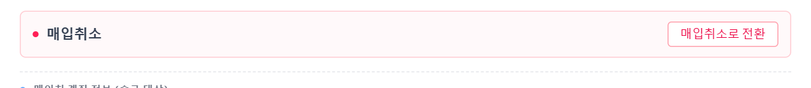
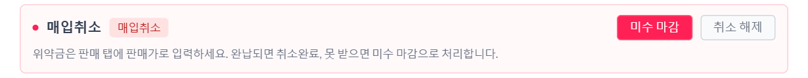
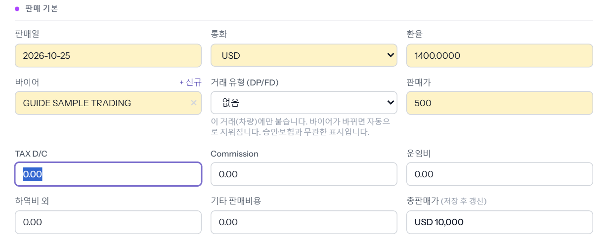
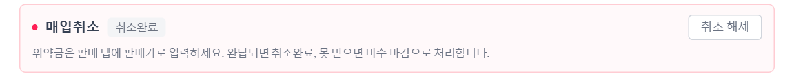
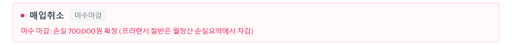
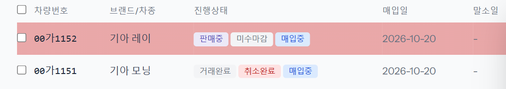

팔기로 한 차를 바이어가 취소해 매입까지 무르는 경우입니다. 차를 「매입취소」로 바꾸고, 바이어에게 받을 위약금을 판매가 자리에 넣습니다. 위약금을 다 받으면 「취소완료」(거래완료로 셉니다), 끝내 못 받으면 「미수 마감」으로 손실을 확정합니다. 예시 차량 00가1151 · 00가1152(USD 판매 10,000 · 위약금 USD 500).

「매입취소로 전환했습니다. 위약금은 판매 탭에 판매가로 입력하세요.」가 뜨고 칸에 빨간 「매입취소」가 붙습니다. 잘못 눌렀으면 [취소 해제]로 되돌립니다.

판매가 칸에 바이어에게 받을 위약금을 넣습니다(예시 USD 10,000 → 500). [수정 저장]을 누르면 「판매 정보 확인」 창이 뜨고 [확인 후 저장]으로 저장합니다. 이제 이 차의 받을 돈(미수)은 위약금만큼입니다.

채권관리 「입금」(또는 판매 탭 잔금)으로 넣고 「재무 처리」에서 확정합니다 — 씬 「채권관리」. 미수가 0 이 되면 칸의 뱃지가 회색 「취소완료」로 바뀌고, 목록의 진행상태가 「거래완료」가 됩니다.

「위약금 수금을 포기하고 마감합니다. 부족분이 손실로 확정되고 프리랜서는 절반을 부담합니다. 진행할까요?」 확인 창이 뜹니다. [확인]을 누르면 남은 위약금이 원화 손실로 굳습니다(예시 USD 500 × 판매환율 1,400 = 700,000원).

목록에서는 진행상태 옆에 「취소완료」·「미수마감」이 붙어 구분됩니다.
